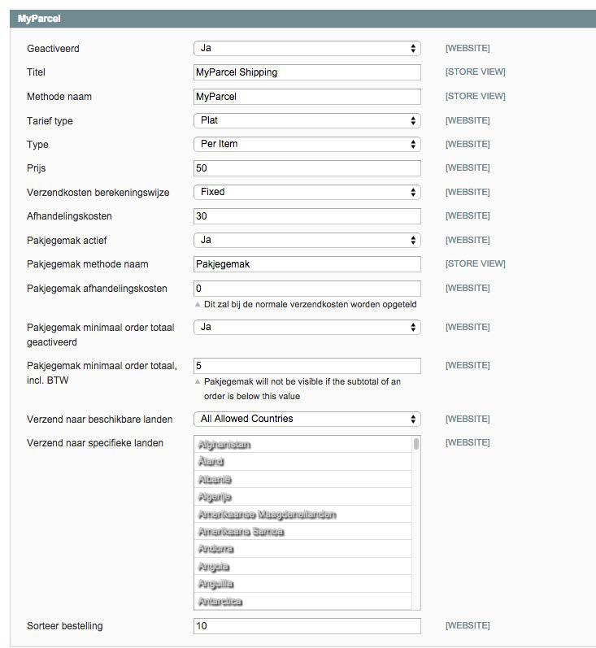
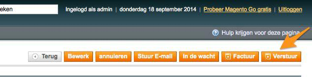
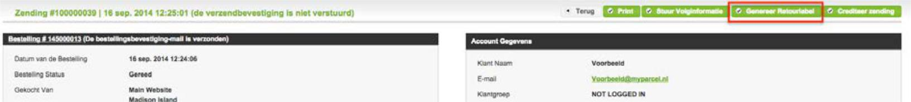
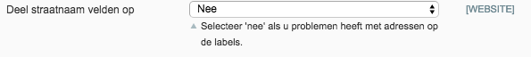

Inleiding
Deze handleiding beschrijft de functionaliteiten van de MyParcel extensie en hoe je de MyParcel extensie in jouw webwinkel kunt installeren. De installatie kan op twee manieren worden uitgevoerd:
- SSH/FTP
- Magento Connect
In deze handleiding beschrijven wij de installatie via SSH/FTP. Mocht je hier hulp bij nodig hebben dan adviseren wij om contact op te nemen met je technisch beheerder.
Met deze Magento extensie kun je drie soorten MyParcel zendingen aanmaken:
- Normaal (gewone pakketten en Ophalen op PostNL locatie)
- Brievenbuspakje
- Ongefrankeerd label
Inhoud
1 Installatie
Wij adviseren de installatie altijd eerst op een testomgeving uit te voeren en een back-up te maken van jouw webshop voor je begint.
1.1 Technische vereisten
Om de MyParcel Magento extensie te gebruiken dient uw server aan de onderstaande vereisten te voldoen:
- Minimaal PHP versie 5.3
- SOAP PHP Libraries
- 256MB geheugen
De onderstaande Magento versies worden ondersteund:
Community 1.6, 1.7, 1.8, 1.9
1.2 Extensie downloaden
U kunt de extensie op drie locaties downloaden:
- Github MyParcel voor de meest recente versie (Om het zip bestand te downloaden klik onder Downloads op source code.)
https://github.com/myparcelnl/magento1/releases/latest -
Website MyParcel
http://backoffice.myparcel.nl/integratie
1.3 Compiler uitschakelen
Schakel de compiler eerst uit indien deze is ingeschakeld. Dit kan via het menu: Systeem → Hulpmiddelen → Compilatie.
1.4 Mappen & bestanden uploaden
Het .zip bestand bevat twee mappen:
- app
- skin
Upload deze mappen naar jouw Magento installatie.
Er worden geen bestanden overschreven. Als het SSH/FTP programma vraagt of je de mappen wilt samenvoegen of
vervangen kies dan voor de optie samenvoegen.
1.5 Cache legen & opnieuw inloggen
Login op jouw Magento beheeromgeving en ga naar het menu Systeem → Beheer cache. Klik op Selecteer alles,
kies in het dropdownmenu voor de optie Ververs en klik op de Bevestig button.
Klik vervolgens rechtsboven op Uitloggen en log opnieuw in op jouw beheeromgeving.
1.6 Cron controleren
De MyParcel extensie maakt gebruik van enkele cronjobs. Deze zijn nodig om de statussen van zendingen bij periodiek bij te werken in uw backend. De extensie haakt in op de cronfunctionaliteit van Magento. Bij een correcte Magento installatie is de cron actief. Neem contact op met jouw ontwikkelaar als u hier vragen over heeft. Server cronjob De wijze waarop je cronjobs op jouw server instelt verschilt per hostingprovider omdat er meerdere webserverbeheer systemen bestaan. Voorbeelden hiervan zijn DirectAdmin, Plesk en Cpanel. Onderstaand een voorbeeld hoe je in DirectAdmin een cronjob insteld voor Magento.
- Ga naar het account waar de Magento omgeving op draait en klik Cronjobs aan.

- Voor een Magento Community webshop stelt je in dat de cronjob elke 5 minuten geactiveerd moet worden (zoals in onderstaand voorbeeld).

- Controleer met SSH of je de cronjob kunt activeren.
Dit kan door in een terminal venster in te loggen en het command in te voeren. In ons voorbeeld is dat /home/magento/public_html/cron.sh. Dit dient je te doen met root rechten. Mocht dit niet werken of mocht de server geen shell mogelijkheid hebben dan kunt je uitwijken naar het cron.php bestand. In dat geval kun je twee cronjobs aan te maken. Je kunt aan geven waar PHP draait voor de opdrachten en de locatie achterhalen met de PHP constante PHP_BINDIR.
Achter de opdrachten moet je een parameter te plaatsen:- Opdracht 1: cron.php -malways 1
- Opdracht 2: cron.php -mdefault 1

- Zorg dat de cron.sh (of cron.php) bestand 755 rechten heeft. De server roept nu elke 5 minuten de cron functionaliteit van Magento aan.
- Magento cron
- Ga naar het menu System → Configuration → Advanced → System → Cron (Scheduled Tasks).
-
Zorg dat de instellingen gelijk zijn aan onderstaande afbeelding.

2 Configuratie
Ga naar het menu Systeem → Configuratie → Verkoop → MyParcel om de MyParcel extensie te
configureren.
2.1 API instellingen
Vul hier jouw MyParcel gebruikersnaam en API-key in.
Als je ingelogd bent in jouw myparcelaccount op backoffice.myparcel.nl dan kun je deze vinden in menu
Instellingen → Algemeen.
2.2 Algemene Instellingen
2.2.1 Activeer MyParcel extensie
Schakel de extensie in door Activeer MyParcel extensie op Ja te configureren.
2.2.2 Print oriëntatie
Kies de Print oriëntatie. Als je kiest voor A4 formaat zullen vier verzendlabels per A4 vel geprint worden. Als je kiest voor A6 formaat zijn de verzendlabels geschikt voor het printen met een speciale labelprinter zoals een Zebra of Dymo 4XL.
2.2.3 Track&Trace e-mail template
Kies welke template je wilt gebruiken voor de Track & Trace e-mails in de dropdown Track&Trace email template. Je hebt 2 keuzes:
- De Track&Trace mails via MyParcel versturen, of
- De Track&Trace mails vanuit je Magento shop versturen.
Via MyParcel
Volg hiervoor onderstaande stappen:
- Log in op MyParcel.nl
- Ga naar het menu Instellingen → Track & Trace
- Stel hier jouw Track&Trace mails naar wens in
Via je Magento webshop:
Volg hiervoor onderstaande stappen:
- Ga naar Systeem → Transactionele Emails
- Kies voor de button Nieuw Sjabloon Toevoegen
- Selecteer het sjabloon Verzendings update en kies Laad Sjabloon.
- Geef een naam aan het sjabloon in het veld Naam Sjabloon. Dit is voor intern gebruik.
- Pas de inhoud van het sjabloon naar wens aan. Je kunt hiervoor de variabele {{var tracktrace_url}} en {{var retourlabel_url}} gebruiken.
- Om er voor te zorgen dat er alleen tekst wordt getoond wanneer deze variabelen aanwezig zijn, kan je gebruik maken van {{depend tracktrace_url}} en {{depend retourlabel_url}}.
- Kies voor de button Sjabloon Opslaan.
- Ga naar het menu Systeem → Configuratie → MyParcel en vervolgens naar de tab Algemene instellingen.
- Selecteer in de dropdown Track&Trace email template het sjabloon dat je zojuist hebt aangemaakt.
2.2.4 MyParcel versturingsmethodes
Indien je naast de MyParcel versturingsmethode nog meer versturingsmethodes gebruikt kun je deze selecteren zodat je daar ook MyParcel handelingen op kunt uitvoeren. Door alle versturingsmethode te selecteren, maak je het mogelijk om ten alle tijden de zendingen te exporteren naar MyParcel. 
Om alles in één keer te selecteren gebruik je:
- In Windows: CTRL + A
- IN OS X: CMD + A.
2.3 Standaard verzend instellingen
2.3.1 Standaard voorkeuren
Op basis van de ingevulde orderwaarde worden de onderstaande opties geactiveerd. Voorbeeld: Indien je bij Verzekerd tot € 250 bijvoorbeeld de waarde 100 invult, worden orders met een verkoopwaarde boven de € 100 automatisch verzekerd tot een waarde van € 250. Deze logica is voor alle onderstaande opties in te stellen:
- Alleen huisadres
- Handtekening bij ontvangst
- Retour bij niet aanwezig
- Verzekerd tot € 50
- Verzekerd tot € 250
- Verzekerd tot € 500
Let op: Op het moment dat 0 ingevuld staat, is de optie niet geactiveerd. Bij invullen van 1 of hoger staat de optie actief.
2.3.2 Douane verzend type
Kies in het dropdownmenu bij het configuratieveld Douane verzend type de optie die bij uw zendingen
past.
Douane goederen HS code
Vul in het veld Douane goederen HS code de gewenste HS code in.
Je kunt de codes vinden op deze link: http://gebruikstarief.douane.nl
Let op: de HS code moet exact vier cijfers zijn.
2.3.3 Deel straatnaam velden op
Je kunt in het veld Deel straatnaam velden op voor Ja of Nee kiezen. Wij adviseren om de straatnaam velden niet op te delen, kies hier voor nee.
2.4 Versturingsmethodes configuratie
Ga naar het menu Systeem → Configuratie → Verkoop → Versturings Methodes → MyParcel.
Activeer de versturingsmethode. Kies vervolgens een Titel en een Methodenaam.
2.4.1 Tarief type
Je kunt gebruik maken van twee methodes om de verzendkosten te berekenen:
- Plat: Bij deze methode kun je direct het type en de prijs invullen.
- Tabel: Bij deze methode worden de tarieven uit de Table Rates van Magento gebruikt.
- Ga naar het menu Systeem → Configuratie → Verzendmethodes → Myparcel
- Kies bij Tarief type voor Table en bij Voorwaarde een gewenste instelling.
- Schakel de tabel tarieven verzendmethode van Magento zelf uit. Om de verzendmethode van Magento uit te schakelen, volg je Verzendmethode → tarieven prijstabel en zet ingeschakeld op nee.
-
Maak een CSV Table Rates bestand. Op deze pagina kun je een CSV genereren: www.elgentos.nl/tablerates.
Tip: Voor gratis verzendkosten vanaf een bepaald bedrag maak je een extra regel aan bij het desbetreffende land. - Zorg ervoor dat je werkt op website niveau links bovenin bij scope huidige configuratie. Hier selecteer je de main website.
- Upload het Table Rates CSV bij de verzendmethode Table Rates. De MyParcel extensie gebruikt de Table Rates van Magento zelf.
2.4.2 Afhandelingskosten
Stel in of je Afhandelingskosten hanteert naast de verzendkosten. Deze kosten worden bovenop de verzendkosten berekend.
2.4.3 PostNL locatie
PostNL locatie actief
Selecteer hier of jouw klanten hun pakketten bij een postpunt mogen ophalen.
PostNL locatie methode naam
Hier kun je aangeven welke titel je in jouw webshop wilt gebruiken voor de verzendmethode Ophalen bij een PostNL locatie.
PostNL locatie afhandelingskosten
Stel in hoeveel afhandelingskosten klanten betalen wanneer ze hun pakket willen ophalen bij een PostNL locatie.
PostNL locatie minimaal order bedrag actief
Wanneer je een minimaal orderbedrag wilt hanteren voor het ophalen bij een PostNL locatie kan je dat hier invoeren.
2.4.4 Verzend naar beschikbare landen
Kies naar welke landen je met MyParcel wilt versturen.
2.4.5 Sorteer bestelling
Kies de positie van de versturingsmethode in het veld Sorteer bestelling. Je kunt dit veld ook leeg laten.
3 Frontend functionaliteiten
Klanten zullen in het bestelproces de keuzen kunnen maken uit een normale verzending of afhalen op een PostNL afhaallocatie. Indien klanten kiezen om een zending af te halen op een PostNL afhaallocatie opent er een pop-up waarin zij een afhaallocatie kunnen selecteren.

4 Backend functionaliteiten
Om de backend functionaliteiten te kunnen gebruiken dient de MyParcel extensie te zijn ingeschakeld.
4.1 Verzending aanmaken
Een MyParcel zending aanmaken kan op twee manieren: 
Batch methode in het bestellingenoverzicht.
- Selecteer de zendingen die je wilt exporteren naar MyParcel
- Kies in de actie balk MyParcel - creëer en print MyParcel label
- Klik vervolgens op de juiste pakket soort en vervolgens op Verstuur
- Kies voor de juiste printpositie, indien je voor A4 hebt gekozen
- Het PDF verschijnt op je computer en is klaar om te printen
Per bestelling als je een Magento zending aanmaakt.
- Klik op de desbetreffende zending
- Kies rechtsboven voor de knop verstuur
- Rechts onderin verschijnt een geel vak met extra verzendopties
- Verstuur zending naar MyParcel
Het is ook mogelijk om een order in deelleveringen te versturen, bijvoorbeeld wanneer de order in totaliteit te zwaar of te groot is om in één doos te versturen of wanneer een deel van de levering tijdelijk niet voorradig is en je deze later alsnog wil toesturen.
- Je kunt hiervoor de order bekijken en rechtsboven kiezen voor Verstuur.
- Pas de hoeveelheid aan bij Items te verzenden en kies rechtsonder voor Stuur verzending.
- Je kunt hierna op dezelfde wijze nog een verzendlabel aanmaken voor dezelfde order. Beide verzendingen worden opgeslagen in de order.
4.2 Genereer retourlabel

Klik in het order overzicht op de betreffende order. Op het detailscherm klik je links in het menu op de tab
Zendingen. Klik de betreffende zending aan die geretourneerd moet worden. Je bent nu op het verzending
detail scherm waar je rechtsboven de button Genereer retourlabel ziet staan.
Jouw klant zal van MyParcel een e-mail ontvangen met een link naar het verzendlabel indien er een
e-mailadres is ingevuld bij de zending. Je kunt jouw e-mail voor retouren binnen MyParcel eventueel nog
personaliseren. Je kunt dit doen door in te loggen bij MyParcel bij Instellingen → Retour en dan
onderaan de pagina Pas e-mail aan.
5 Upgraden
Voor de nieuwste versie van de MyParcel extensie klik op de volgende link:
https://github.com/myparcelnl/magento1/releases/latest
Om het zip bestand te downloaden klik onder Downloads op source code.
Voor meer informatie over de release notes kijk dan hier:
https://github.com/myparcelnl/magento1/releases
5.1 Upgrade stappen
1 Compiler uitschakelen
Schakel de compiler uit indien deze is ingeschakeld.
Dit kan ingesteld worden in het menu Systeem → Gereedschap → Compilatie.
2 Mappen & bestanden uploaden
Het .zip bestand bevat twee mappen:
- app
- skin
Upload deze mappen naar jouw Magento installatie.
Als het SSH/FTP programma vraagt of je mappen wilt samenvoegen of vervangen kies dan voor samenvoegen.
3 Cache legen & opnieuw inloggen
Login op jouw Magento beheeromgeving en ga naar het menu Systeem → Beheer cache. Klik op Selecteer alles, kies in de dropdown voor Ververs en klik op de Bevestig button.
Klik rechtsboven op Uitloggen en log opnieuw in op uw beheeromgeving.
De extensie is nu geüpgraded.
6 Veel gestelde vragen
6.1 Ondersteunen jullie mijn checkout?
De verzendmethode MyParcel maakt gebruik van standaard Magento functionaliteiten. Dit houdt in dat de
verzendmethode in elke checkout die volgens de Magento richtlijnen is opgebouwd werkt.
MyParcel 'Ophalen op een PostNL locatie' wordt ondersteund voor de onderstaande checkout extensies:
- OnePageCheckout, dit is de standaard checkout van Magento.
- IWD checkout
- Idev OneStepCheckout, deze kan je aanschaffen op www.onestepcheckout.com. Let op, je dient nooit 'Ophalen op een PostNL locatie' als default verzendmethode in te stellen.
6.2 Ik gebruik een postcode check extensie, is dat een probleem?
In principe is het mogelijk een postcode check extensie te gebruiken in combinatie met de MyParcel Magento extensie.
6.3 Hoe kan ik gratis verzendkosten instellen?
Naast de Table Rates kun je ook gratis verzendkosten instellen via Promoties > Winkelwagen prijsregels.
- Klik rechts bovenin op Nieuwe regel toevoegen.
- Bij Regelgegevens geef je de regel een naam (voorbeeld: ‘gratis verzenden vanaf 50’). Zet de status op actief en kies bij websites en klantengroepen alle opties.
- Klik links boven op Voorwaarden en schrijf zelf de regel door op + te klikken. (voorbeeld: Subtotaal gelijk aan of groter dan 50)
- Ga naar de volgende stap acties en geef bij gratis verzending aan Alleen voor betreffende artikelen.
- Klik rechts bovenin op opslaan.
6.4 Waarom komt mijn label niet door naar MyParcel met een andere verzendmethode?
Vanaf versie 1.3 van de MyParcel Magento extensie kun je andere verzendmethode aan de MyParcel extensie koppelen. Dit kan handig zijn als je bijvoorbeeld een verzendkosten extensie gebruikt.
Dit kun je instellen via Systeem > Configuratie > MyParcel.
6.5 API-key van MyParcel plugin verandert na inloggen in Magento naar de inloggegevens.
Je gebruikt waarschijnlijk Safari. Als je bijvoorbeeld Chrome als browser zou gebruiken gaat alles goed. Dit heeft te maken met dat safari wachtwoorden verkeerd opslaat.
6.6 Mijn label kan niet aangemaakt worden.
Probleem:
Label kan niet worden aangemaakt
- Er komt wel een popup waar je kan kiezen op welke plek geprint moet worden, maar verder gebeurt er niks
- Je gebruikt meerdere verzendmethodes (inc. Flat Rate, Table Rates en Free Shipping)
Oplossing:
Bij instellingen van MyParcel moeten alle verzendmethodes aangevinkt zijn die worden gebruikt. Dit doe je bij Systeem → Verzendmethodes.
6.7 Op het label komt geen toevoeging van het huisnummer.
Toevoeging van huisnummer staat in een aparte regel. Dit komt niet mee op het label. Update naar een versie na 1.5.x
Ga naar Systeem → Instellingen → MyParcel → Standaard verzend instellingen. Zet Deel straatnaam velden op op nee.
